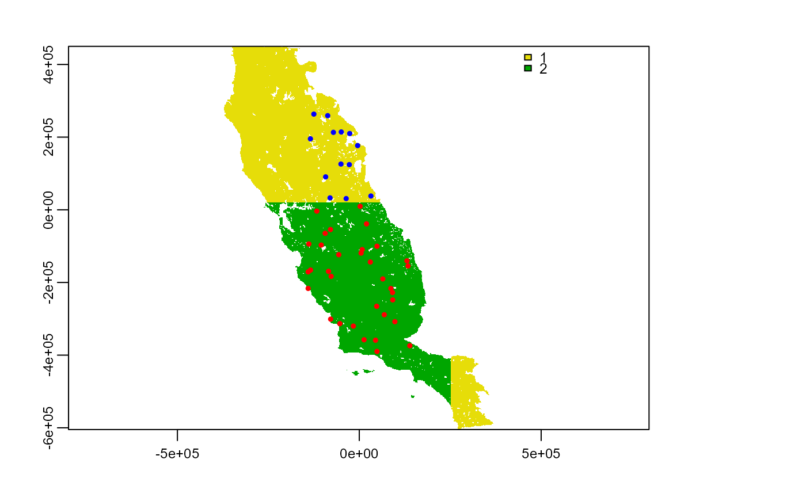
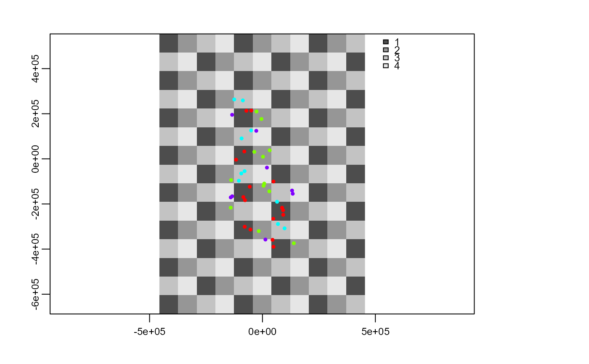
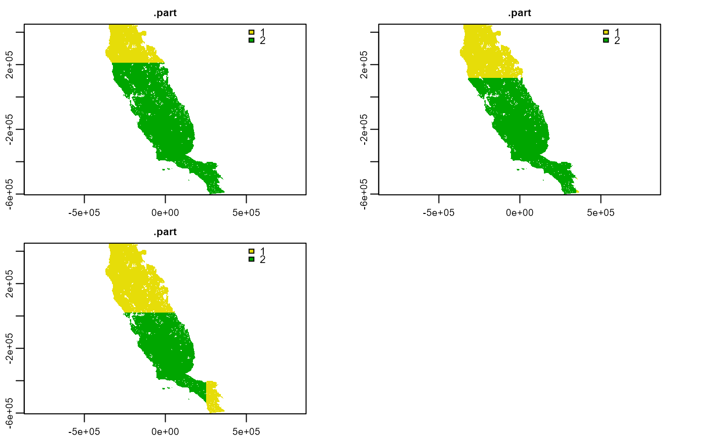
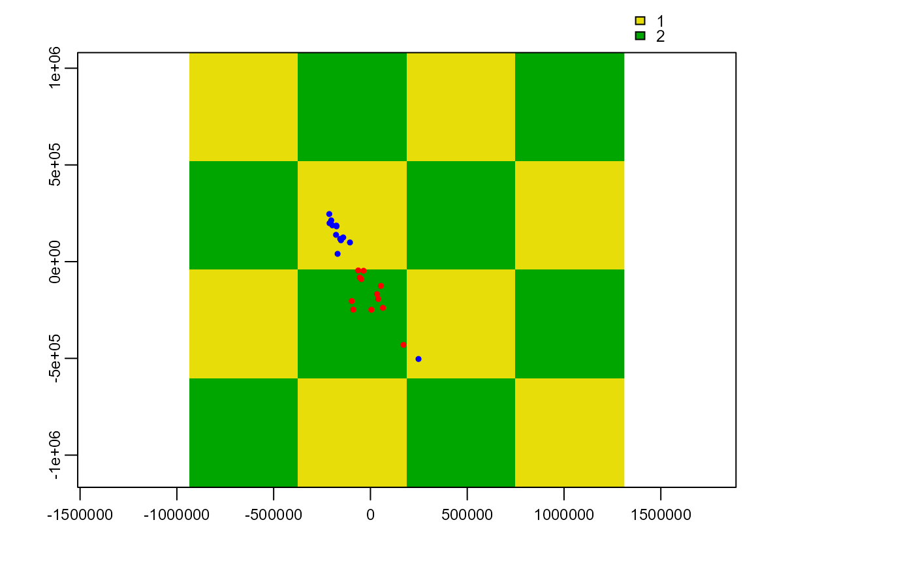

part_sblock.RdThis function explores spatial blocks with different cell sizes and returns the best one suited for a given presence or presence-absences database. The selection of the best grid size is performed automatically considering spatial autocorrelation, environmental similarity, and the number of presence and absence records in each partition.
part_sblock( env_layer, data, x, y, pr_ab, n_part = 3, min_res_mult = 3, max_res_mult = 200, num_grids = 30, prop = 0.5 )
| env_layer | SpatRaster. Raster with environmental variable. This will be used to evaluate spatial autocorrelation and environmental similarity between training and testing partition. Because this function calculate dissimilarity based on euclidean distances, it can only handle continuous layers, do not use categorical layers as inputs |
|---|---|
| data | data.frame. Data.frame or tibble object with presences (or presence-absence, or presences-pseudo-absence) records, and coordinates |
| x | character. Column name with longitude data |
| y | character. Column name with latitude data |
| pr_ab | character. Column with presences, presence-absence, or pseudo-absence. Presences must be represented by 1 and absences by 0 |
| n_part | integer. Number of partition. Default 2, values other than 2 has not yet been implemented. |
| min_res_mult | integer. Minimum value used for multiplying raster resolution and define the finest resolution to be tested, default 3. |
| max_res_mult | integer. Maximum value used for multiplying raster resolution and define the coarsest resolution to be tested, default 200. |
| num_grids | integer. Number of grid to be tested between min_res_mult X (raster resolution) and max_res_mult X (raster resolution), default 30 |
| prop | numeric. Proportion of point used for testing autocorrelation between groups (values > 0 and <=1). The smaller this number is, the faster the function will work. Default 0.5 |
A list with:
part: A tibble object with information used in 'data' arguments and a additional column .part with partition group.
best_part_info: A tibble with information of the bets partition. It contains the number of the best partition (n_grid), cell size (cell_size), standard deviation of presences (sd_p), standard deviation of absences (sd_a), Moran's I spatial autocorrelation (spa_auto), and environmental similarity based on euclidean distance (env_sim).
grid: A SpatRaster object with blocks
write here criteria used for performing the search of the best partition (metrics and quartil selection).
part_random, part_senv, get_block, and plot_res.
# \dontrun{ require(terra) require(dplyr) # Load datasets data(spp) f <- system.file("external/somevar.tif", package = "flexsdm") somevar <- terra::rast(f) # Lest practice with a single species single_spp <- spp %>% dplyr::filter(species == "sp3") part <- part_sblock( env_layer = somevar, data = single_spp, x = "x", y = "y", pr_ab = "pr_ab", min_res_mult = 10, max_res_mult = 500, num_grids = 30, n_part = 2, prop = 0.5 )#>#> #>#>#>part#> $part #> # A tibble: 46 x 4 #> x y pr_ab .part #> <dbl> <dbl> <dbl> <dbl> #> 1 -26331. 209912. 1 1 #> 2 -134331. 195332. 1 1 #> 3 68709. -288778. 0 2 #> 4 -79251. -54418. 0 2 #> 5 97869. -307948. 0 2 #> 6 4989. -119218. 0 2 #> 7 30369. -143788. 0 2 #> 8 91929. -248008. 0 2 #> 9 -80331. 32792. 0 1 #> 10 131079. -140548. 1 2 #> # ... with 36 more rows #> #> $best_part_info #> # A tibble: 1 x 6 #> n_grid cell_size spa_auto env_sim sd_p sd_a #> <int> <dbl> <dbl> <dbl> <dbl> <dbl> #> 1 17 625655. 0.046 468. 4.24 18.4 #> #> $grid #> class : SpatRaster #> dimensions : 4, 4, 1 (nrow, ncol, nlyr) #> resolution : 625655.2, 625655.2 (x, y) #> extent : -999341, 1503280, -1230469, 1272152 (xmin, xmax, ymin, ymax) #> coord. ref. : +proj=aea +lat_0=0 +lon_0=-120 +lat_1=34 +lat_2=40.5 +x_0=0 +y_0=-4000000 +datum=NAD83 +units=m +no_defs #> source : memory #> name : block #> min value : 1 #> max value : 2 #>part$part#> # A tibble: 46 x 4 #> x y pr_ab .part #> <dbl> <dbl> <dbl> <dbl> #> 1 -26331. 209912. 1 1 #> 2 -134331. 195332. 1 1 #> 3 68709. -288778. 0 2 #> 4 -79251. -54418. 0 2 #> 5 97869. -307948. 0 2 #> 6 4989. -119218. 0 2 #> 7 30369. -143788. 0 2 #> 8 91929. -248008. 0 2 #> 9 -80331. 32792. 0 1 #> 10 131079. -140548. 1 2 #> # ... with 36 more rowspart$best_part_info#> # A tibble: 1 x 6 #> n_grid cell_size spa_auto env_sim sd_p sd_a #> <int> <dbl> <dbl> <dbl> <dbl> <dbl> #> 1 17 625655. 0.046 468. 4.24 18.4part$grid#> class : SpatRaster #> dimensions : 4, 4, 1 (nrow, ncol, nlyr) #> resolution : 625655.2, 625655.2 (x, y) #> extent : -999341, 1503280, -1230469, 1272152 (xmin, xmax, ymin, ymax) #> coord. ref. : +proj=aea +lat_0=0 +lon_0=-120 +lat_1=34 +lat_2=40.5 +x_0=0 +y_0=-4000000 +datum=NAD83 +units=m +no_defs #> source : memory #> name : block #> min value : 1 #> max value : 2#> [1] 625655.2 625655.2#> [1] 1890 1890# Note that is a layer with block partition, but it has a # different resolution than the original environmental variables. # In the case you wish have a layer with the same properties # (i.e. resolution, extent, NAs) than your original environmental # variables you can use the \code{\link{get_block}} function. grid_env <- get_block(env_layer = somevar, best_grid = part$grid) plot(grid_env) # this is a block layer with the same layer# properties as environmental variables. points(part$part[c("x", "y")], col = c("blue", "red")[part$part$.part], cex = 0.5, pch = 19 )# This layer could be very useful in case you need sample # pseudo_absence or background point # See examples in \code{\link{backgroudp}} and \code{\link{pseudoabs}} # Lest try with a higher number of partition part <- part_sblock( env_layer = somevar, data = single_spp, x = "x", y = "y", pr_ab = "pr_ab", min_res_mult = 10, max_res_mult = 500, num_grids = 30, n_part = 4, prop = 0.5 )#>#> #>#>#># Now lets learn use these functions with several species spp2 <- split(spp, spp$species) class(spp2)#> [1] "list"#> [1] 3#> [1] "sp1" "sp2" "sp3"part_list <- lapply(spp2, function(x) { result <- part_sblock( env_layer = somevar, data = x, x = "x", y = "y", pr_ab = "pr_ab", min_res_mult = 10, max_res_mult = 500, num_grids = 30, n_part = 2, prop = 0.5 ) result })#>#> #>#>#>#>#> #>#>#>#>#> #>#>#># Lets create a single database for all species occ_part <- dplyr::bind_rows(lapply( part_list, function(x) x[[1]] ), .id = "species") occ_part#> # A tibble: 1,089 x 5 #> species x y pr_ab .part #> <chr> <dbl> <dbl> <dbl> <dbl> #> 1 sp1 -5541. -145138. 0 2 #> 2 sp1 -51981. 16322. 0 2 #> 3 sp1 -269871. 69512. 1 2 #> 4 sp1 -96261. -32008. 0 2 #> 5 sp1 269589. -566338. 0 2 #> 6 sp1 29829. -328468. 0 2 #> 7 sp1 -152691. 393782. 0 1 #> 8 sp1 -195081. 253652. 0 1 #> 9 sp1 -951. -277978. 0 2 #> 10 sp1 145929. -271498. 0 2 #> # ... with 1,079 more rows# Lets get a the best grid info for all species grid_info <- dplyr::bind_rows(lapply( part_list, function(x) x[[2]] ), .id = "species") # Lets get a the best grid layer for all species grid_layer <- lapply(part_list, function(x) x$grid) grid_layer2 <- lapply(grid_layer, function(x) { get_block(env_layer = somevar[[1]], best_grid = x) }) grid_layer2 <- terra::rast(grid_layer2) grid_layer2#> class : SpatRaster #> dimensions : 558, 394, 3 (nrow, ncol, nlyr) #> resolution : 1890, 1890 (x, y) #> extent : -373685.8, 370974.2, -604813.3, 449806.7 (xmin, xmax, ymin, ymax) #> coord. ref. : +proj=aea +lat_0=0 +lon_0=-120 +lat_1=34 +lat_2=40.5 +x_0=0 +y_0=-4000000 +datum=NAD83 +units=m +no_defs #> sources : memory #> memory #> memory #> names : .part, .part, .part #> min values : 1, 1, 1 #> max values : 2, 2, 2# Block partition for presences-only database single_spp <- spp %>% dplyr::filter(species == "sp2", pr_ab == 1) single_spp#> # A tibble: 25 x 4 #> species x y pr_ab #> <chr> <dbl> <dbl> <dbl> #> 1 sp2 -169701. 40352. 1 #> 2 sp2 -175101. 182642. 1 #> 3 sp2 -152151. 110552. 1 #> 4 sp2 34149. -168088. 1 #> 5 sp2 -88701. -248008. 1 #> 6 sp2 -63051. -45508. 1 #> 7 sp2 -177801. 138632. 1 #> 8 sp2 -196431. 187772. 1 #> 9 sp2 54399. -125158. 1 #> 10 sp2 -35511. -47128. 1 #> # ... with 15 more rows#> [1] 1part <- part_sblock( env_layer = somevar, data = single_spp, x = "x", y = "y", pr_ab = "pr_ab", min_res_mult = 10, max_res_mult = 500, num_grids = 30, n_part = 2, prop = 0.5 )#> #>#>#>part$part#> # A tibble: 25 x 4 #> x y pr_ab .part #> <dbl> <dbl> <dbl> <dbl> #> 1 -169701. 40352. 1 1 #> 2 -175101. 182642. 1 1 #> 3 -152151. 110552. 1 1 #> 4 34149. -168088. 1 2 #> 5 -88701. -248008. 1 2 #> 6 -63051. -45508. 1 2 #> 7 -177801. 138632. 1 1 #> 8 -196431. 187772. 1 1 #> 9 54399. -125158. 1 2 #> 10 -35511. -47128. 1 2 #> # ... with 15 more rowspart$best_part_info#> # A tibble: 1 x 5 #> n_grid cell_size spa_auto env_sim sd_p #> <int> <dbl> <dbl> <dbl> <dbl> #> 1 18 561786. 0.167 278. 0.707part$grid#> class : SpatRaster #> dimensions : 4, 4, 1 (nrow, ncol, nlyr) #> resolution : 561786.2, 561786.2 (x, y) #> extent : -935472, 1311673, -1166600, 1080545 (xmin, xmax, ymin, ymax) #> coord. ref. : +proj=aea +lat_0=0 +lon_0=-120 +lat_1=34 +lat_2=40.5 +x_0=0 +y_0=-4000000 +datum=NAD83 +units=m +no_defs #> source : memory #> name : block #> min value : 1 #> max value : 2# }